Панель инструментов 3D-мира позволяет вам создавать визуальные эффекты в области просмотра.
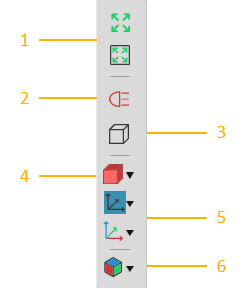
1. |
Полный вид |
2. |
Подсветка |
3. |
Проекция камеры |
4. |
Рендеринг |
5. |
Отображение системы координат |
6. |
Редактор Видов |

Полный Вид
Вы можете просмотреть все имеющиеся компоненты или выбраные в 3D-мире. Просмотр всех компонетов позволяет узнать весь масштаб текущей планировки и быстро отцентрировать свое представление в 3D-мире.
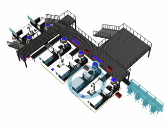
Просмотр выбранных компонентов позволяет сфокусироваться, чтобы показать работу выделенных объектов в техмерном мире.

Подсветка
Вы можете переключить использование направленного света от камеры, чтобы выделить поверхности и ребра геометрии компонента. Как правило, это используется, когда режим рендеринга установлен на значении Затенение ребер поверхности, чтобы улучшить обнаружение ребер при программировании робота.

Проекция камеры
Вы можете переключить режим проекции камеры 3D-мира с перспективного на ортоготальный. По умолчанию камера трехмерного мира использует перспективную проекцию для отображения глубины в зависимости от того, насколько далеко объекты находятся от камеры.
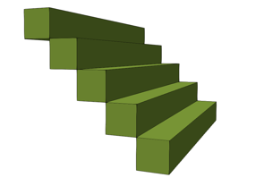
Однако ортоготальная проекция часто используется для создания чертежей и компонентов модели.

Рендеринг
Вы можете определить режим рендеринга и качество отображения объектов в трехмерном мире. Доступны следующие режимы рендеринга:
Каркас |
Затенение всех ребер |
|---|---|
|
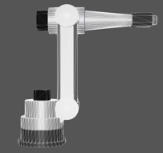 |
Затенение ребер поверхности |
Рентгеновское затенение |
|
|
Затененный |
Затененный материал |
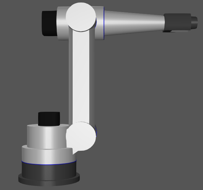 |
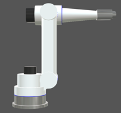 |
Реалистичные тени |
Реалистично затененные ребра |
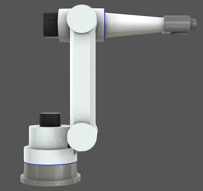 |
|


Отображение системы координат
Вы можете включить/выключить видимость всех типов систем координат в 3D-мире.
База робота
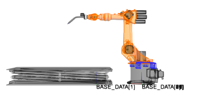
Инструмент робота
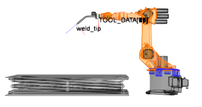
Система координат мира роботов
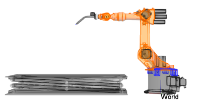
Положения робота
Существуют дополнительные параметры отображения положений роботов, например, вы можете показать/скрыть положения надписей, осей и центральные точки.

Свойства системы координат
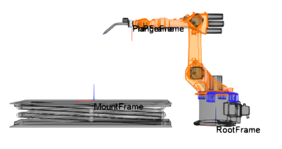
Редактор Видов
Редактор видов позволяет создавать, редактировать, выбирать и сохранять 3D-виды мира с планировкой.
Создать Вид
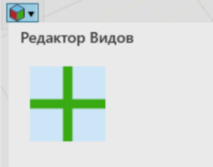
Переименовать Вид
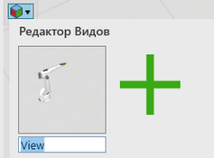
Выбрать и Использовать Вид
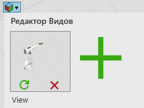
Обновить Вид
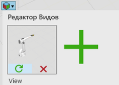
Удалить Вид
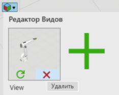
Сохранить Вид
Сохраните текущую планировку. Виды будут автоматически сохранены вместе с планировкой и будут доступны всякий раз, когда планировка будет открыта в 3D-мире.
Полноэкранный Режим
Если в любой момент вы захотите переключиться на полноэкранной режим 3D-мира и обратно, нажмите F11 или функциональную клавишу + F11.
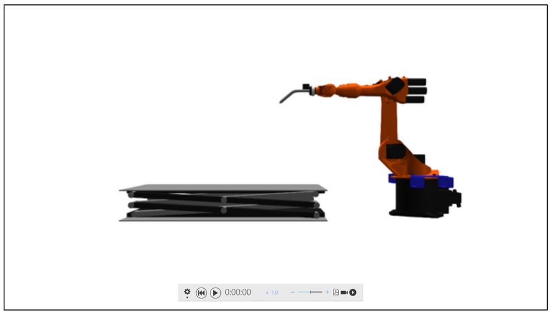